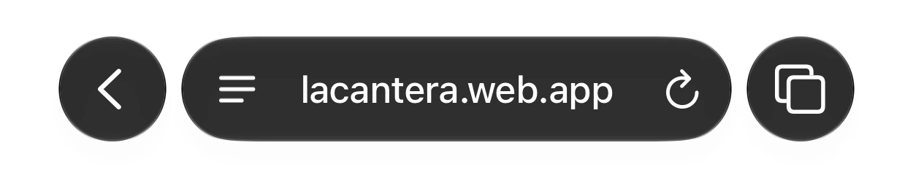
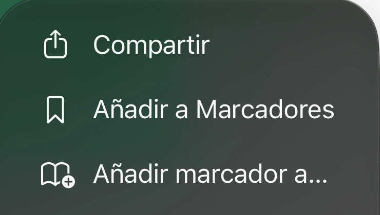
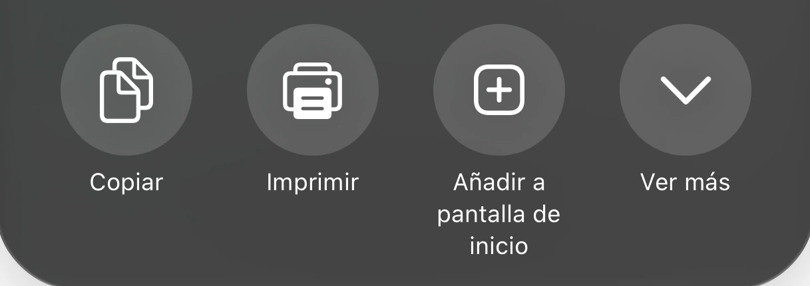
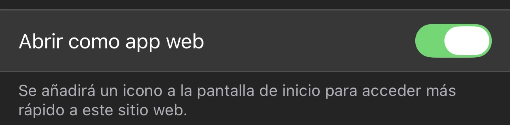
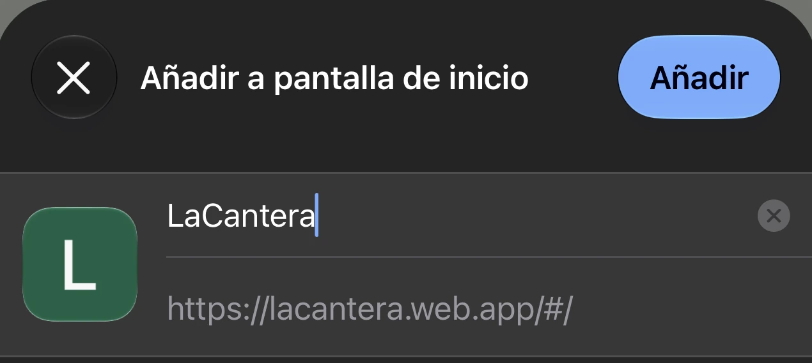

Añade LaCantera a tu pantalla de inicio en cinco pasos.
Abre lacantera.com.es y toca el menú junto a la dirección.

Si ya ves el botón Compartir en Safari, puedes tocarlo directamente.

Busca esta opción en las acciones del menú Compartir.

Deja activado «Abrir como app web» si aparece.

Conserva el nombre LaCantera y pulsa el botón de arriba.

Busca LaCantera en tu pantalla de inicio.